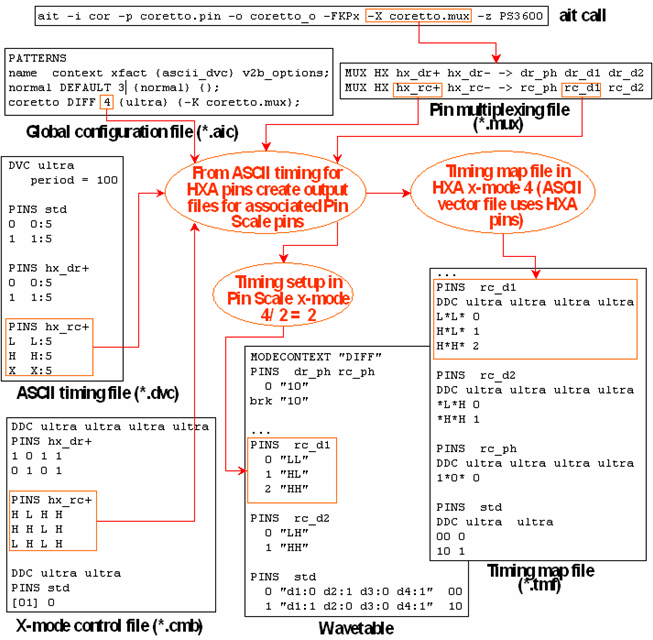
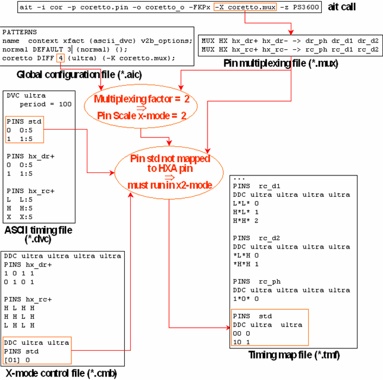

Creating a Timing Setup for HXA
When defining a timing setup for HXA, observe the following rules:
- You must specify the HXA pins in the ASCII timing file and in the x-mode control file. Using the information of the multiplexing file, the timing translation then creates a timing setup file and a timing map file for the Pins Scale pins to which the HXA pins are mapped.
- Within the ASCII timing file, do not combine the timing definition for an HXA pin with a timing definition for one of its associated Pin Scale pins in the same ASCII device cycle.
- Within the x-mode control file, do not combine an entry for an HXA pin with an entry for one of its associated Pin Scale pins in the same DDC block.
- Since the input files define the timing for the HXA pins (not for the associated Pin Scale
pins), the x-mode factor must also be defined on the HXA level. Therefore you must specify the
product of the intended (Pin Scale) x-mode factor and the multiplexing factor in the
xfact column of the global configuration file. This also holds for the
x-mode control file.
If, for example, the x-mode factor is 8 and the multiplexing factor is 4, then you must enter 32 in the xfact column, and repeat the ASCII dvc name 32 times in the DDC statement of the x-mode control file.
- It is possible to combine HXA pins and normal Pin Scale pins in the same pattern. The x-mode factor for the normal pins is simply the Pin Scale x-mode factor. Therefore the x-mode control file entries for the normal pins must be defined for the Pin Scale, not the HXA x-mode factor.
The following figures illustrates these rules. The first shows the processing of the HXA pins:

The second figure shows how normal Pin Scale pins are handled:

The vector translation for this example is shown in Vector Translation for HXA Multiplexing.